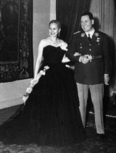
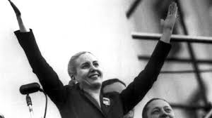

XXVII - EVA PÉRON
Một cô gái 17 tuổi, mồ côi cha, thất nghiệp, đi lang thang trong Thủ đô kiếm việc làm.
Tên cô là Maria Eva Duarte, sinh ngày 7 tháng 5 năm 1919 trong xóm Los Toldos ở vùng ngoại ô bình dân của Buenos Aires, Thủ đô xứ Cộng hòa Argentine, Nam Mỹ. Cha cô là một người thường dân, lấy một cô vợ trẻ không làm giấy giá thú, sinh được năm người con gái, Maria Eva Duarte là cô con gái út. Mẹ cô sinh cô được mấy hôm thì người cha chết. Gia đình nghèo túng, bà bèn dọn đến ở một quận nhỏ gần Thủ đô. Nhờ mẹ cần kiệm, cô con gái lớn được đi học, rồi làm công chức ở Sở Bưu điện. Bà dành dụm tiền mở một nhà nội trú nuôi cơm tháng cho học trò. Nhờ vậy mà bà gả được hai cô con gái cho hai cậu học trò ở gác trọ nhà bà.

Maria Eva bấy giờ đã 16 tuổi, còn đi học, tính tình ranh mãnh nhất nhà. Bà mẹ cũng có ý định hể có một cậu học trò nào ở trọ nhà bà mà có ý thương cô bé, thì bà sẽ gả nốt cô con gái út cho người ta, nhưng Eva không thích thế. Mặc dù nhỏ tuổi, cô đã có ý tự lập không muốn ỷ lại vào mẹ và chị, cũng không muốn lấy chồng học trò. Có một viên sĩ quan còn trẻ tuổi, ăn cơm tháng nhà bà, muốn ve vãn Eva, bà mẹ bằng lòng. Nhưng cô nữ sinh 16 tuổi trề môi bảo mẹ: "Con không thèm làm vợ sĩ quan. Một là con lấy chồng làm Đại tướng, hai là con lấy tài tử xi nê". Mẹ cô ép gả cô cho viên sĩ quan, tức mình cô bỏ nhà trốn lên Thủ đô.
Trong túi không có một đồng xu, Eva đi lang thang kiếm việc làm. Cô đến gõ cửa từng nhà để xin việc. Cô bằng lòng làm cả đứa ở. Với giọng nói cương quyết nhưng dễ thương, cô bảo: "Rửa chén bát, quét nhà, giặt đồ, hoặc làm thư ký, đánh máy chữ, bán hàng cháu làm được cả". Nhưng ai cũng lắc đầu không nhận. Eva không thất vọng.
Nhân có cuộc thi tuyển ba cô điện thoại viên vào Sở Bưu điện, cô làm đơn ứng thí và thi đậu. Nhưng làm được mấy tháng, cô chán nản bỏ việc đi đóng xi nê.
Eva có sắc đẹp ăn ảnh, nhưng vì không biết "chiều chuộng" đạo diễn nên cô chỉ được đóng vai phụ trong nhiều phim không có tiếng tăm. Cô muốn đóng với tài tử lừng danh, nhưng đạo diễn không cho, cô tức giận bỏ đi. Đài phát thanh Belgrano cần dùng một nữ xướng ngôn viên, cô đến xin. Nhờ nói năng tự nhiên và giọng tốt, cô được thâu nhận vào làm.
Cô vừa được 17 tuổi.
* MỘT CUỘC ĐỘNG ĐẤT LỚN LAO Ở TỈNH SAN JUAN, VÀ MỘT TIẾNG SÉT ĐÁNH VÀO TRÁI TIM ÔNG TỈNH TRƯỞNG.
Eva làm xướng ngôn viên Đài phát thanh Belgrano cho đến khi 25 tuổi vẫn chưa chịu lấy chồng. Bao nhiêu người muốn yêu cô, cô không yêu. Hỏi cưới, cô không nhận. Người ta bảo: "Eva khó tánh quá nhỉ!". Cô mĩm cười đáp: "Chưa gặp người yêu, chưa phải lúc yêu".
Mấy cô bạn gái chế nhạo Eva: "Chà, làm cao dữ! Định chờ tới mấy chục tuổi mới lấy chồng?"
Eva mĩm cười đáp:
- Chưa biết.
- Muốn kén ông chồng như thế nào đấy?
- Chưa biết.
Không phải cô gái 25 tuổi muốn làm cao. Lương xướng ngôn viên của cô mỗi tháng chỉ một ngàn rưỡi đồng, vừa cho cô tự túc gọi là để sống cuộc đời bình dị, nghèo nàn, tạm bợ thế thôi.
Nhan sắc tuyệt đẹp, tính tình rất vui vẻ, lịch thiệp, nhưng không có người lọt được vào mắt xanh của cô. Đôi mắt xanh màu da trời đã làm bao nhiêu người mê mệt, nhưng Eva vẫn thờ ơ, chưa thấy lòng rung động vì tình yêu...
Bỗng dưng một buổi sáng năm 1944, cả xứ Argentine và khắp thế giới xúc động vì một tin kinh khủng: Thành phố San Juan bị một trận động đất ghê gớm, trong giây phút có trên mấy ngàn người chết và mấy chục ngàn người không có nhà ở. Nhà cửa, lâu đài sụp đổ ngổn ngang, cả thành phố bị tiêu diệt gần hết. Tỉnh trưởng San Juan là một Đại tá tên là Juan Péron tức tốc lên phi cơ bay về Thủ đô để cầu cứu với chính phủ.
Ông được phép kêu gọi thế giới giúp đỡ tiền của và dụng cụ để cấp cứu tai nạn. Ông đi thẳng tới Đài phát thanh hỏi ông Giám đốc:
- Tôi cần một nữ xướng ngôn viên có giọng nói thật tốt và thật cảm động để đọc lời kêu gọi của tôi.
Ông Giám đốc trả lời liền:
- Thưa Đại tá, chúng tôi có cô Maria Eva Duarte.
Ông Giám đốc cho gọi Eva đến trình diện với Đại tá. Eva và Juan Péron gặp nhau, bỗng dưng như có tiếng sét đánh xoẹt vào hai trái tim. Bốn mắt chạm nhau, thông cảm nhau từ ngay phút đầu tiên.
Péron trao cho Eva một tờ giấy và bảo:
- Cô hiểu tôi muốn gì chứ? Tiếng nói của cô sẽ là tiếng lòng của tôi, truyền ra trên các làn sóng điện để cứu mấy vạn người đang quằn quại đau thương ở San Juan. Tôi tin hoàn toàn nơi cô.
Eva khẽ gật đầu, cầm tờ giấy đến trước máy phát thanh đọc. Péron nghe hết từ đầu đến cuối. Giọng nói của Eva vô cùng cảm động, tha thiết, hồi hộp, đau thương khiến chính ông là tác giả cũng rưng rưng ứa hai dòng lệ. Eva đọc xong, đọc lại một lần nữa, cảm động hơn nữa.
Xong, tay còn run run, cô trả tờ giấy lại cho Đại tá. Péron xúc động quá, nắm bàn tay Eva khẽ bảo:
- Cảm ơn cô Eva. Dân chúng San Juan xin cảm ơn cô.
Chiều hôm ấy, ông mời Maria Eva Duarte đi dùng bữa với ông tại Le Tigre, một tiệm ăn thơ mộng nhất ở Thủ đô Buenos Aires. Trong câu chuyện thân mật giữa hai người. Đại tá Juan Péron thú nhận:
- Tôi có vợ, nhưng đã ly dị từ lâu. Còn cô?
- Tôi chưa có chồng.
- Cô bao nhiêu tuổi?
- 25. Còn ông?
- 49.
Hai người nhìn nhau mĩm cười im lặng. Hai tia mắt phối hợp êm đềm và chặt chẽ, cuộc tình duyên bất ngờ của hai số kiếp.
Từ hôm ấy, chiều nào người ta cũng thấy chiếc xe hơi của Đại tá Péron đến đậu trước cổng Đài phát thanh Belgrano để đón cô Eva.
Nhờ sự tận tâm cứu vãn tai nạn San Juan và sự tuyên truyền khôn khéo của Eva, Đại tá Péron được uy tin lớn đối với dân chúng và chính phủ. Ông được gọi về Thủ đô làm Phó Tổng thống, kiêm Bộ trưởng Bộ Lao động và Bộ Quốc phòng. Eva vẫn còn làm xướng ngôn viên ở Đài phát thanh để cổ động dân chúng ủng hộ Péron.
Hình như đôi tình nhân đã sắp đặt với nhau một kế hoạch tuyên truyền khéo léo để Péron được dân chúng ủng hộ trong cuộc bầu cử Tổng thống sắp tới, tháng Hai năm 1946.
Ở Đài phát thanh, Eva luôn tận dụng các câu hỏi để cổ động cho người yêu và đề cao những tác phong chính trị và xã hội của ông.
Mấy cô bạn gái của Eva biết rõ cuộc ái ân say mê của nàng với Đại tá Péron, nhưng vẫn nhạo báng nàng, vờ như không biết.
- Thế nào chị Eva, chừng nào chị lấy chồng đấy?
- Chưa biết.
- Chị muốn kén người chồng như thế nào?
- Chưa biết.
* MỘT MÌNH NÀNG CHỈ HUY 50.000 NGƯỜI DÂN ĐÓI RÁCH "KHÔNG CÓ ÁO SƠ MI", CHIẾM DINH TỔNG THỐNG.
Giữa lúc uy thế của Péron đang tăng cường nhờ sự cổ động rất khôn lanh của Eva, thì một vị Trung tướng tên là Avalos, ganh ghét Péron liền nổi loạn gây một cuộc đảo chính, ngày 12 tháng 10 năm 1945. Mục đích của cuộc đảo chính là bắt Péron bỏ tù và đuổi Maria Eva Duarte ra khỏi Đài phát thanh. Cuộc đảo chính của Avalos thành công và Péron bị đày ra đảo Martin Gracia. Eva cũng bị viên Giám đốc Đài phát thanh đuổi ra khỏi sở. Nàng cười gằn hỏi viên Giám đốc:
- Vì lý do gì ông đuổi tôi?
Viên Giám đốc mặt lạnh như chì, chỉ trả lời:
- Lệnh của Chính phủ.
Nàng chỉ ngón tay vào mặt ông:
- Được rồi. Tôi sẽ trở lại đây, rồi ông sẽ biết tôi.
Về đến nhà, nàng gục đầu xuống gối khóc nức nở. Péron đã bị bắt và bị đưa đi đày, không kịp tin cho nàng hay, nàng cũng không kịp đến gặp mặt người yêu. Nàng mở bóp lấy tấm ảnh của Péron ôm ấp vào ngực rồi đưa lên môi hôn. Nàng hôn say mê bóng người yêu xa vắng, mĩm cười nhìn bóng và khẽ bảo với bóng:
- Em sẽ trả thù cho mình! Em sẽ trả thù cho chúng ta!
Nàng vui mừng nhớ lại lễ thành hôn của Péron và nàng được tổ chức bí mật tại làng Magdaléna chỉ ba hôm trước khi người yêu bị bắt đi đày. Bây giờ nàng là vợ chính thức của Péron và nàng đã đổi tên thành Evita Péron, nhưng trong chính phủ chưa ai biết. Nàng và chồng muốn tạm giấu lễ thành hôn ấy là để tiện cho công việc hoạt động bí mật của nàng trong cuộc bầu cử Tổng thống sắp tới.
Nàng sung sướng tưởng mình đang có thai, té ra không phải. Evita chép trong nhật ký: "Thượng đế chưa muốn cho ta có con vội trong lúc ta còn phấn đấu quyết liệt cho người yêu trở về với ta. Nhưng ta và chàng sẽ sung sướng xiết bao nếu khi chàng lên ghế Tổng thống, ta sẽ tặng chàng một đứa con yêu quý"
Bây giờ mặc dầu người yêu của Evita là một tên tù bị lưu đày ra một hòn cù lao giữa biển, nàng vẫn cương quyết đấu tranh cho chàng được trở về và đắc cử Tổng thống. Nàng tin tưởng như thế vì nàng hiểu rõ tình hình chính trị và xã hội của nước Cộng hòa Argentine đang khao khát một biến đổi cho đời sống của nhân dân được tốt đẹp hơn.
Nàng bắt đầu đi vận động, nàng khéo hô hào kêu gọi những lớp bình dân thiếu ăn, thiếu mặc mà nàng gọi là descamisados - "những kẻ không có áo sơ mi". Chỉ 5 ngày sau hôm Đại tá Péron bị bắt đi đày, một mình Evita vận động trong Thủ đô Buenos Aires được 50.000 người "không có áo sơ mi" do chính nàng làm lãnh tụ, chỉ một cuộc biểu tình khổng lồ trước Dinh Tổng thống vào ngày 17 tháng 10 năm 1945 và đi diễn khắp trong thành phố, giăng biểu ngữ và la to một khẩu hiệu duy nhất: "Chúng tôi muốn Péron về!"
Đoàn người "không có áo sơ mi" hung hăng kéo vào chiếm Dinh Tổng thống và cương quyết đòi Péron về để tranh cử Tổng thống. Chính phủ hoảng sợ và muốn tránh cuộc nổi loạn của dân chúng, vội vàng cho người ra cù lao rước Đại tá Péron về.
Evita đã thắng rất vẻ vang được giai đoạn đầu và chính quyền bắt đầu kinh sợ nàng. Nhưng còn ba tháng nữa mới tới ngày bầu cử Tổng thống mới. Một hôm, Evita tới Đài phát thanh báo với viên Giám đốc Yankevitch:
- Trước hết, ông phải trả đủ tiền lương của tôi từ hôm ông đuổi tôi vô cớ, để tôi thất nghiệp cho đến nay. Rồi ông giao tất cả các cơ quan của Đài phát thanh cho tôi sử dụng để vận động cuộc tranh cử Tổng thống cho Đại tá Péron.
Viên Giám đốc còn ngoan cố hỏi khinh khỉnh:
- Cô lấy quyền gì đòi hỏi vô lý như thế?
Evita rút trong bóp của nàng ra tờ hôn thú đã ký với Péron còn mới tinh, chìa ra trước mặt viên Giám đốc.
- Ngó vào đây này, đồ ngốc!
Yankevitch là một người Nga nhập quốc tịch Argentine, trố mắt nhìn tờ giấy giá thú của Evita Péron, rồi hoảng hồn cúi đầu khúm núm:
- Tôi xin bà Đại tá tha lỗi cho tôi, và xin bà cứ tự tiện sử dụng Đài phát thanh từ hôm nay. Tôi xin sẵn sàng ủng hộ bà và Đại tá Péron.
Ngày 24 tháng 2 năm sau, 1946, Péron được đại đa số phiếu bầu lên làm Tổng thống. Thế là Eva Duarte, cô gái nghèo mồ côi cha, ở ngoại ô kinh thành, thất nghiệp, đi lang thang xin việc hồi 10 năm trước không ai dùng, nay đã nghiễm nhiên thành bà Tổng thống Eva Péron lừng danh cả Thế giới.
* NHƯ NÀNG KIỀU SAU KHI LẤY TỪ HẢI

Juan Péron được bầu cử lên làm Tổng thống nước Cộng hòa Argentine, liền mua tặng vợ một chiếc áo ấm bằng lông thú trị giá 5 triệu đồng và các đồ nữ trang trên 5 triệu để tạ ơn nàng đã vận động đám dân nghèo, đa số quần chúng "không có áo sơ mi" bỏ phiếu cho ông đắc cử. Eva, lúc bấy giờ đã nghiễm nhiên thành bà Tổng thống, "đệ nhất phu nhân" trong nước, không chịu ngồi không để hưởng cái địa vị cao sang tột bực ấy. Nàng quyết tâm làm sao cho tiếng tăm của nàng lừng lẫy khắp thế giới, được làm chúa tể cả nước, làm lãnh tụ thật sự của 17 triệu dân Argentine. Nàng dựa vào đám dân nghèo làm đầu cơ chính trị để củng cố địa vị của Péron và của nàng. Nàng lập ra một đảng cần lao gọi là Descamisados (Những kẻ không có áo sơ mi) quy tụ tất cả những người lao động bình dân, nhất là phụ nữ, mà nàng cho tăng lương và biếu quà bánh, vuốt ve o bế họ. Một mặt, nàng dùng chính sách mị dân đối với lao động để họ ủng hộ nàng, một mặt nàng trả thù lại những kẻ đã đối xử với nàng không tốt trong lúc nàng chưa "lên chân". Cũng như nàng Kiều sau khi được Từ Hải lấy làm vợ, lập tức lấy ân báo ân, lấy oán báo oán. Evita Péron cũng dựa vào uy quyền của chồng đuổi hết những nhân viên Đài phát thanh, bắt đầu từ viên Giám đốc đã khinh miệt nàng. Nàng giải tán các hãng sản xuất xi nê đã cho nàng đóng các vai phụ. Nàng bỏ tù những kẻ đã làm trái ý nàng hoặc đã ganh ghét nàng về những vấn đề cá nhân vụn vặt. Nàng lấy quyền thế tranh giành các mối lợi lớn, chiếm độc quyền các kinh doanh, xây dựng cho nàng một tư bổn hàng mấy trăm triệu. Nàng là cột trụ trong các hội buôn kết xù, như hội Alesa mà đại diện là nhà tỉ phú Miguel Miranda, hội Hàng không và Xuất nhận cảng mà đại diện là kỹ sư Dodero và vợ của y là Betty, đôi bạn thân nhất của cặp vợ chồng Péron. Nàng gởi tiền nơi các Ngân hàng Thụy sĩ, xây cất lâu đài nhà cửa ở hai xứ Brésil và Uruguay.
Nàng đem người em trai của nàng là Juancito vào làm Chánh Văn phòng của Tổng thống Péron. Chị của nàng là Elisa, một nữ công chức thường của công ty Bưu điện, được nàng cho làm Tỉnh trưởng tỉnh Uunin. Hai người chồng của hai người chị khác được cho làm Tổng Giám đốc các Sở. Một tình nhân của mẹ nàng, là Entique Nicolin, nhân viên Bưu điện, được lên lảm Tổng Giám đốc Bưu chính và Viễn thông.
Người ta kể một hôm em trai của nàng là Juancito, Chánh Văn phòng của Péron, ngồi ăn trong một nhà hàng lớn với nhân tình làm đào hát mà chàng ta vừa tặng một chiếc xe hơi Mỹ. Trong lúc nói chuyện, cô nhân tình vui miệng nói một lời mỉa mai Eva Péron. Tức thì chàng đứng dậy đi thẳng ra sân nhà hàng châm lửa đốt luôn chiếc xe hơi Mỹ.
* EVA PÉRON RA TRANH CỬ PHÓ TỔNG THỐNG

Hai năm sau khi Juan Péron lên làm Tổng thống nước Cộng hòa Argentine, Eva đi du lịch Châu Âu định gây thêm uy tín. Lúc bấy giờ cả thế giới đã khét tiếng Eva, một thiếu phụ trẻ đẹp mà oai quyền lớn lao và hung dữ ở xứ Cộng hòa Argentine, vợ một vị Tổng thống độc tài chuyên chế. Cuộc du lịch ngoại giao của nàng năm 1948 đã làm xôn xao dư luận Âu Mỹ. Trước hết, nàng định viếng nước Espagne (Y Pha Nho) vì được Đại tướng Franco, Quốc trưởng xứ này mời nàng qua để tặng nàng một huy chương đặc biệt. Nàng cho chở trên chiếc phi cơ riêng của nàng mấy chục thùng nữ trang, đầy ngập những áo và nữ trang quý giá mà nàng đặt mua ở Thủ đô Buenos Aires. Tổng cộng các hóa đơn gởi đến Dinh Tổng thống còn nặng hơn ngân sách hàng năm của Bộ Quốc phòng Argentine.
Tổng thống Péron thấy vậy liền la rầy vợ và yêu cầu nàng trả lại bớt đồ nữ trang cho các tiệm kim hoàn, chỉ giữ lại một số vừa phải thôi. Eva không nghe, nhất định đem theo tất cả, và cũng không trả tiền cho các hóa đơn.
Tháng 11 năm 1948, nàng sang viếng nước Pháp, đem theo 40 va li, áo, nón, giày và nữ trang. Trên mỗi va li đều có đề tên nàng thật lớn bằng chữ đỏ. Nàng được Tổng thống Pháp Vincent Auriol mời đến Điện Rambouillet. Trước khi từ giã Paris, nàng có mua sắm các đồ nữ trang quý giá và các kiểu áo đẹp nhất của hai nhà may danh tiếng Fath và Dior, trị giá tất cả 20 triệu quan.
Đến nước Ý, Eva Péron được Tổng thống Ý Alcide de Gasperi tặng một chiếc Alfa Romeo và một con chó sói bằng cẩm thạch mà ông sai người mang ra để trong phi cơ riêng của nàng trong đêm trước khi nàng từ biệt La Mã. Nàng có đến viếng Giáo hoàng Pie XII và nàng đi trễ 20 phút, vì đến phút chót trước giờ hẹn, nàng muốn đến một tiệm kim hoàng lớn nhất ở Rome mua một hột kim cương đẹp nhất, đắt tiền nhất đeo trước ngực để vào yết kiến Giáo hoàng.
Eva Péron mặc đồ đen nhưng nàng để tóc xõa xuống đến dây nịt, và hột kim cương chói lọi sáng ngời trên ngực khiến cho Pie XII cũng phải khó chịu. Lúc về Argentine, nàng gởi tặng Giáo hoàng mười chiếc tàu chở đầy lúa mì.
Nàng muốn sang nước Anh để được Nữ hoàng Elisabeth đó tiếp, nhưng lúc nàng đến nước Pháp, Nữ hoàng Elisabeth chỉ gởi điện tín chào mà không mời nàng sang viếng nước Anh.
Eva, một cô gái nghèo, thất nghiệp xưa kia, rất hãnh diện trong cuộc du lịch này với tư cách vợ Tổng thống Cộng hòa Argentine. Nhưng sự việc Nữ hoàng Elisabeth của Anh quốc không muốn tiếp nàng, và cả Tổng thống Hoa Kỳ cũng không mời nàng đến Washington làm nàng nhột và xấu hổ với dân chúng Argentine. Vì thế, khi nàng về nước, nàng quyết vận động làm Phó Tổng thống để được chính thức sang viếng nước Anh và nước Mỹ.
Nàng đã làm Bộ trưởng Bộ Lao động, và tìm cách mua chuộc cảm tình của quần chúng cần lao để đến kỳ bầu cử Phó Tổng thống họ sẽ bỏ phiếu cho nàng. Nàng tăng lương cho thợ thuyền 40%, cho công nhân Bưu điện 70%, mặc dầu nền kinh tế của Cộng hòa Argentine đang bị khủng hoảng. Nàng lập ra các viện Tế bần, đặt tên là Viện Evita Péron (Evita là nên mà nàng mới đặt khi nàng lấy Juan Péron), các tổ chức xã hội để cứu giúp phụ nữ, các hợp tác xã phụ nữ...v...v.. Không phải vì nàng thương xót kẻ nghèo, chỉ có mục đích đầu cơ chính trị để mong sau này phe Descamisados sẽ ủng hộ nàng lên làm Phó Tổng thống, rồi sẽ kế vị chồng mà lên chức Tổng thống.
Ngày lễ Noel, nàng phân phát cho nhi đồng 5 triệu đồ chơi, từ con pu pê đến chiếc xe máy, và biếu cho cha mẹ cái em 4 triệu chai "pane dulce", là thứ nước cam của Argentine. Nàng tổ chức một trận đá bóng tròn cho thiếu niên cần lao và tặng 1.500.000. Những số tiền kết xù như thế đâu phải của riêng nàng. Chính là tiền công quỹ mà nàng bắt Quốc hội Cộng hòa Argentine chấp thuận lấy trong ngân sách ra để cho Viện Evita Péron nhân danh "Tổng thống phu nhân" tặng các nhi đồng và phụ nữ cần lao.
Nhưng mặc dầu nàng khôn khéo sắp đặt, tổ chức các cơ quan để ủng hộ tham vọng của nàng, đến kỳ bầu cử Phó Tổng thống, nàng ghi tên ra ứng cử, nhưng bị thất bại nặng nề. Nàng định tổ chức một cuộc mít tinh khổng lồ để diễn thuyết và cổ động cho nàng, nàng cho các trường nghỉ học, các sở nghỉ việc để người đi theo cho đông, nhưng không hiểu sao chỉ có 250.000 người, hầu hết là các cô các bà bị bắt buộc phải đi dự cuộc biểu tình. Còn đàn ông và các bạn cần lao đều không đến dự. Quân đội Cộng hòa Argentine thì nhiệt liệt phản đối Eva Péron ra ứng cử Phó Tổng thống. Họ cho rằng, nếu Tổng thống chết thì tự nhiên, theo Hiếp pháp, Phó Tổng thống sẽ lên thay thế chức Tổng thống và sẽ là Tổng Tư lệnh Quân đội.
Vì vậy, cuộc tranh cử Phó Tổng thống của Eva Péron bị thất bại chua chát. Muốn cứu vớt danh dự, nàng tuyên bố với báo chí: "Xét kỹ lại, vì tôi chưa đến 30 tuổi, là tuổi bắt buộc để tranh cử chức Phó Tổng thống, nên tôi rút lui"
* LÊN VOI, RỒI XUỐNG CHÓ
Tháng 8 năm 1951, Eva Péron ốm nặng. Các báo đăng tin rằng, ngày 6 tháng 11, một bác sĩ Mỹ có danh tiếng về khoa ung thư, George T.Peck được Tổng thống Péron mời đến chữa trị cho Tổng thống phu nhân. Nhưng Eva bị ung thư dạ dày khá nặng, càng ngày càng ốm yếu, sụt xuống còn 35 cân, không có thuốc nào cứu chữa được.
Ngày 4 tháng 8 năm 1952, Eva từ trần.
Theo lệnh của Tổng thống Juan Péron, xứ Cộng hòa Argentine phải để quốc tang cho Tổng thống phu nhân. Một số phụ nữ truy tôn nàng lên bậc "Thánh nữ Evita", nhưng Gia tô giáo phản đối.
Thi hài của nàng mặc áo lụa trắng, được tẩm nước hoa nằm trong hòm kiếng đặt ở Bộ Lao động, và thợ thuyền của Đảng Cần lao - Descamisados phải túc trực hầu hạ trong 360 ngày chờ xây dựng xong lăng tẩm của nàng mới cử hành đám táng. Mỗi buổi sáng, đúng 8 giờ, toàn thể dân chúng phải đứng im mặc niệm trong 15 phút, bất kể nắng mưa. Đàn ông đều phải đeo cà vạt đen, và băng đen nơi cánh tay. Trước các cửa ngõ, từng nhà một đều phải vẽ hình Eva Péron để truy niệm. Tại công trường Mayo, ở trung tâm Thủ đô Buenos Aires, Tòa Đô chánh có dựng lên một bức hình lớn nhất.
Chính phủ đúc nhiều pho tượng của nàng, dựng lên ở nhiều nơi. Nhà Bưu điện ngưng bán các loại tem, đợi ra một loại tem mới có hình Eva Péron và sẽ phát hành trên toàn quốc. Trong lịch sử thế giới, chưa có nước nào và chưa có lần nào, một người đàn bà chết mà được Chính phủ trọng vọng và truy tôn đến thế.
Nhưng được bao lâu?
Chỉ mấy năm sau thôi, cách mạng nổ bùng do cuộc đảo chánh bất ngờ của Quân đội Cộng hòa Argentine. Tổng thống Juan Péron bị lật đổ chạy trốn sang một xứ láng giềng. Phe quân nhân đảo chính lập chính phủ mới. Tức thì hôm sau, tất cả các pho tượng của Eva Péron bị dân chúng hạ bệ nằm ngổn ngang trên khắp các đường phố đầy những bức ảnh của Eva bị xé vứt lung tung. Những vết tích gì của Eva Péron đều bị xóa bỏ hết.
Tổng thống Juan Péron chạy trốn với một cô nữ sinh rất xinh đẹp, tình nhân của ông, mới thi đỗ tú tài.
Ông chạy trốn không kịp đem theo vàng bạc châu báu và 16 chiếc xe hơi Huê Kỳ của riêng ông và của Eva./.